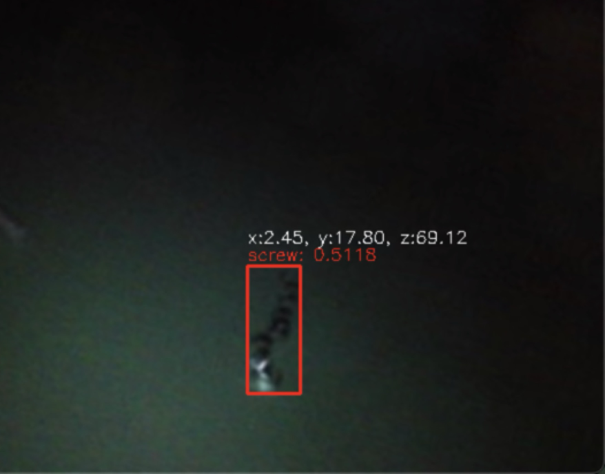
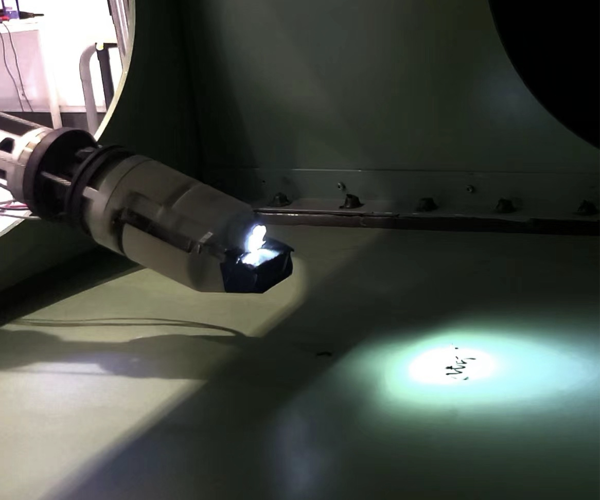
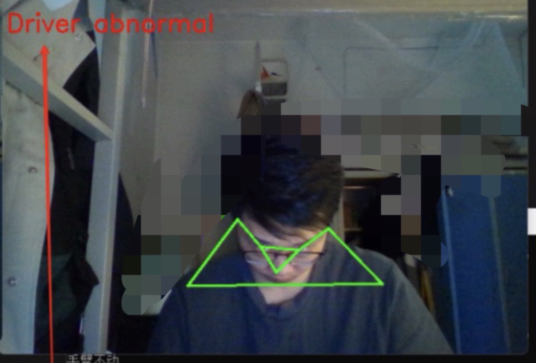
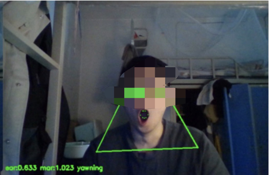

|
Haoyu Wang I am a Biomedical Informatics Ph.D student at University of Pittsburgh School of Medicine. I completed my undergraduate studies at Beijing Forestry University, majored in Computer Science and Technology. I have been working as a computational biology intern at Osmanbeyoglu Lab in UPMC Hillman Cancer Center since Aug 2024. Now I am looking for an internship in the field of machine learning, AI, data analysis, computational biology, and other AI4Medicine. If you are interested in my profile, please feel free to contact me. |
{kind=link}
ResearchFeel free to reach out if you are interested in my research or have any questions! |
 |
ISMB 2025 Talk! DGAT: A Dual-Graph Attention Network for Inferring Spatial Protein Landscapes from TranscriptomicsSep 2024 - May 2025 project page Designed and implemented DGAT, a deep learning framework leveraging graph attention networks (GATs) for imputing spatial protein expression from transcriptomics-only spatial transcriptomics (ST) data. Constructed dual heterogeneous graphs capturing spatial proximity and molecular similarity for both mRNA and protein modalities, encoded by modality-specific GAT encoders. Developed a multi-branch decoder for protein prediction and optimized a cross-modality loss function to align mRNA and protein embeddings with latent space supervision. Benchmarked DGAT using one-sample holdout strategy across different spatial multi-omics data. DGAT outperformied state-of-the-art methods (cTP-net, scLinear, sciPENN, Seurat) in protein imputation accuracy. Demonstrated out-of-distribution generalization on unseen lymph node, melanoma, and prostate cancer tissues, achieving high adjusted Rand index in spatial domain recovery. Published preprint on bioRxiv: 10.1101/2025.07.05.662121 Deep learning, machine learning model design, graph neural networks (GNNs), multi-omics data |
|
|
Pancreatic Data Analysis
August 2024 - Dec 2024 Utilized LMM to model the relationship between gene expression and pathway/TF activity to infer the activity of the pathway/TF. Analyzed the activity difference between clusters, such as Cancer, Stromal, using p value to determine which pathways/TFs have significant influence on each cluster. Data analysis, machine learning, parameter tuning, statistic and etc. |
|

 |
BDRS: Binocular Detection and Ranging System
June 2022 - August 2022 project page BDRS is a vision system for an removal operation robot. It can help the robot to detect the obstacles and measure the distance between the robot and the obstacles. YOLOv5 was adopted as the detection method in BDRS. Ranging was based on the detection of the binocular camera. Deep learning, 3D ranging, corner detection, camera rectification and etc. |
|

 |
DFDA: Driver Fatigue Detection Algorithm
March 2024 - June 2024 project page DFDA is an algorithm to evaluate driver status, in which deep learning algorithm, as a means of feature point detection, is the cornerstone of subsequent analysis. YOLOv8-pose is adopted as a pose estimation method, and facial keypoint detection is realized by using functions in Dlib. Deep learning, sliding window, analysis based on feature extraction and etc. |
|
RCT_MLPDocAnalyzer: A paper analysis tool
March 2024 project page RCT_MLPDocAnalyzer is a paper analysis tool to classify whether a paper is a randomized controlled trial based on some of the paper's properties, RCTfor short. The project uses CountVectorizer in conjunction with neural networks to analyze text. Machine Learning, feature Engineering and etc. |
Internships |
 |
Osmanbeyoglu Lab at UPMC Hillman Cancer Center
August 2024 - Current Computational Biology Intern Utilized Python for developing integrative machine learning approaches and Omics data analysis.Optimized and applied STAN, a machine learning method, to pancreatic cancer data. Used statistical methods to find consistency in Transcription Factor (TF) and Pathway activity between different patients. Machine learning, Python, data analysis and etc. |
|
Beijing Huashu Yihui Technology Co., Ltd
March 2024 - July 2024 Data analyst Intern Worked on using C++ to debug surgical robots and check operational status; drafted patent applications for endovascular interventional medical robots where I needed to compare anti-collision algorithms with existing patents. Machine learning, Python, mySQL, data analysis, NLP and etc. |
|
|
Shenzhen Zmotion Technology Co., Ltd
July 2023 - March 2024 Vision Engineer Intern Responsible for using Python for visual positioning, matching, and detection algorithm encapsulation in the company’s IDE. Creating document for developers in company. Python, computer vision, algorithm design, Basic and etc. |
|
|
Shanghai Operation Robot Co., Ltd
July 2021 - August 2021 Software Engineer Intern Worked on using C++ to debug surgical robots and check operational status; drafted patent applications for endovascular interventional medical robots where I needed to compare anti-collision algorithms with existing patents. C++, algorithm design and etc. |
|
Feel free to steal this website's source code. Do not scrape the HTML from this page itself, as it includes analytics tags that you do not want on your own website — use the github code instead. Also, consider using Leonid Keselman's Jekyll fork of this page. |